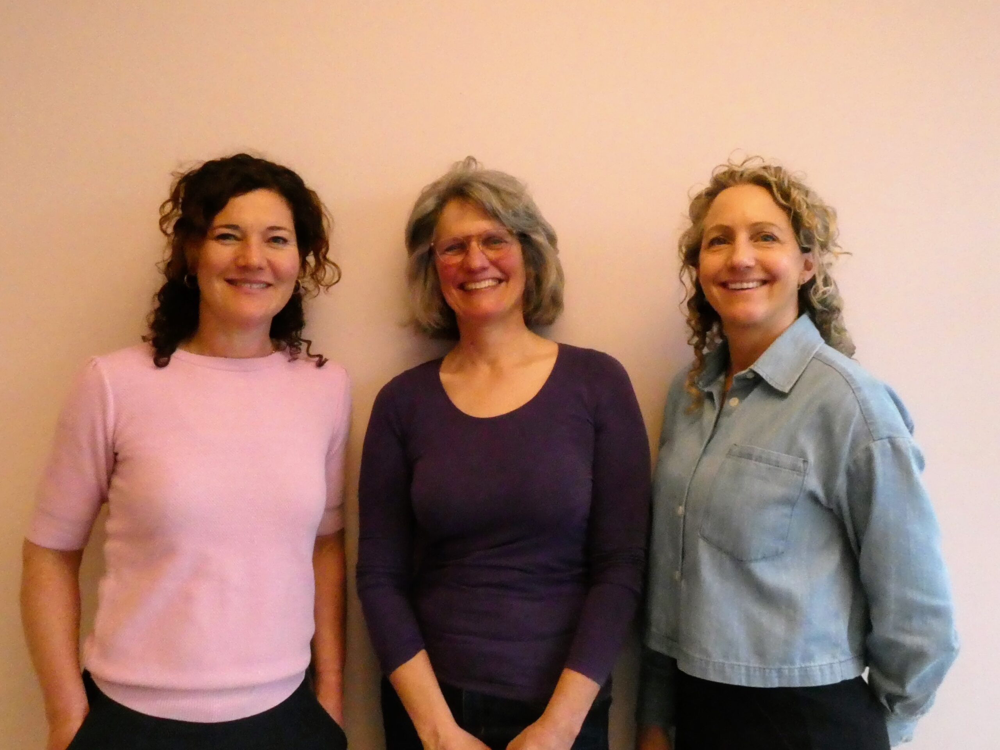
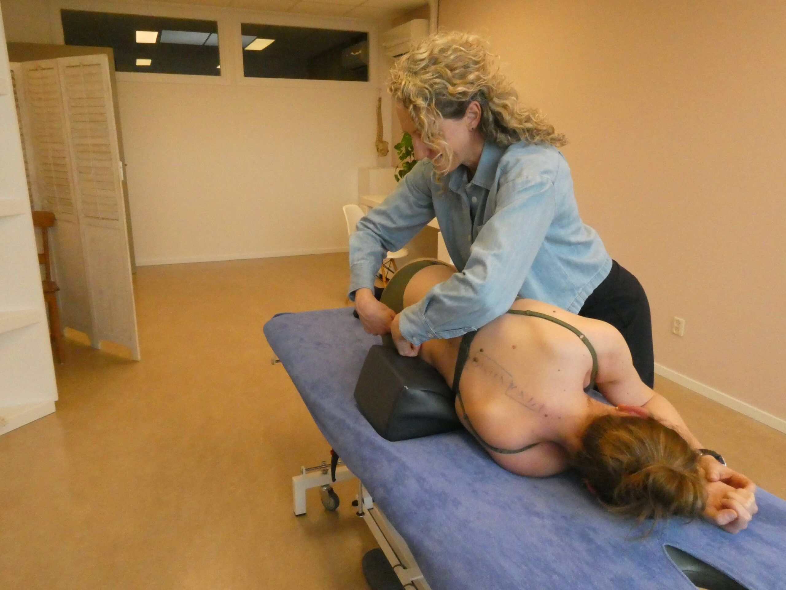

Pijnvrij bewegen, met een medische blik en een persoonlijk plan.
Beweegartsen behandelt klachten van het bewegingsapparaat bij de bron. Geen standaardprotocol — een diagnose, een plan en, vaak al op het eerste consult, een eerste behandeling.

detail · spinal palpation consult · MSK arts
consult · MSK arts
Wij behandelen klachten van het bewegingsapparaat.
Van rug en nek tot voet en sportblessures. Hieronder de meest voorkomende redenen waarom mensen bij ons binnenlopen — meer dan negentig procent van de zorg die we leveren.
Rug & nek
Lage rugpijn, hernia, nekklachten
Hoofdpijn
Spanningshoofdpijn, migraine
Schouder & elleboog
Frozen shoulder, tenniselleboog
Pols & hand
Carpaal tunnel, RSI
Bekken & heup
Bekkenpijn, heupklachten
Knie & enkel
Knieklachten, enkelinstabiliteit
Voet
Hielspoor, voetpijn
Sportblessures
Hardlopen, racket-, krachtsport
Het eerste consult, in vier delen.
Anamnese
We nemen ruim de tijd om uw klachten, voorgeschiedenis en doelen te begrijpen.
Lichamelijk onderzoek
Functioneel en manueel onderzoek van het bewegingsapparaat — gericht op de onderliggende oorzaak.
Behandelplan
We bespreken de diagnose en stellen samen een persoonlijk plan op.
Eerste behandeling
Manuele technieken, mobilisaties of injectieve behandeling — meestal direct in het eerste consult.
“Na een jaar zoeken kwam ik bij Beweegartsen terecht. Binnen drie behandelingen liep ik weer pijnvrij. Wat me bijbleef: de tijd die werd genomen om écht te luisteren.”
Drie artsen, één aanpak.
Wij zijn allen geregistreerd MSK-artsen, aangesloten bij de NVAMG. We werken samen met fysiotherapeuten, sportartsen en huisartsen in de regio.
 portrait — Leonie
portrait — LeonieLeonie Seebregts
Pionier in MSK-geneeskunde in Bilthoven, met meer dan twintig jaar klinische ervaring in het bewegingsapparaat.
Lees meer → portrait — Astrid
portrait — AstridAstrid de Vries
Achtergrond in sportgeneeskunde; bijzondere aandacht voor knie- en enkelblessures van actieve patiënten.
Lees meer →
portrait — LonnekeLonneke van der Mark
Manueel-arts met expertise in nek- en hoofdpijnklachten en het bekken bij vrouwen.
Lees meer →Rembrandtlaan 2B,
Bilthoven.
- Adres
- Rembrandtlaan 2B, 1e verdieping
3723 BJ Bilthoven - Telefoon
- 030 212 93 00
- Openingstijden
- Maandag t/m vrijdag · 08:00 — 17:30
- Bereikbaarheid
- 10 min lopen vanaf station Bilthoven · gratis parkeren
 behandelkamer · Rembrandtlaan 2B
behandelkamer · Rembrandtlaan 2B
Veelgestelde vragen.
Antwoorden op de vragen die we het vaakst aan de telefoon krijgen. Staat uw vraag er niet bij? Bel of stuur een bericht — we bellen u terug.
Laat ons u terugbellen.
Vul het formulier in of spreek het antwoordapparaat in. We bellen u binnen één werkdag terug om een afspraak in te plannen.